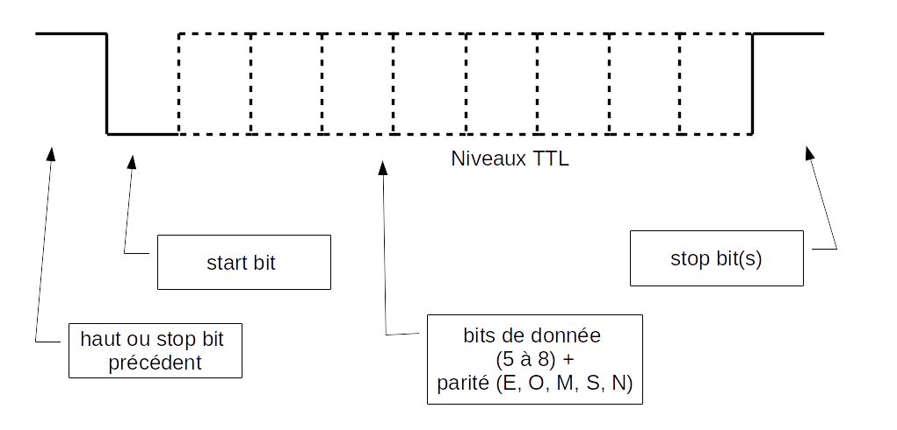
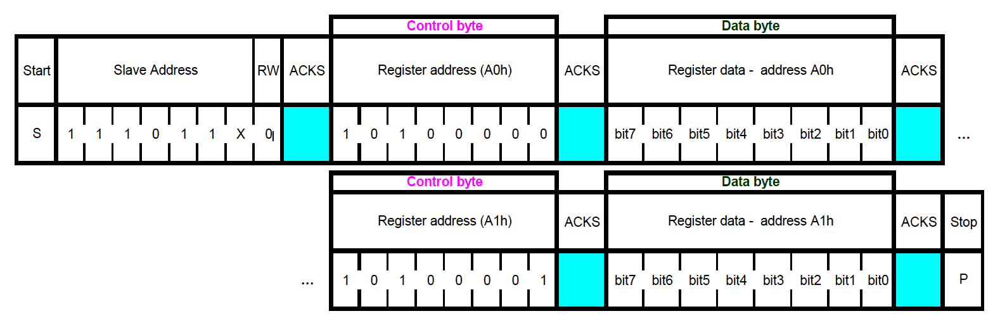
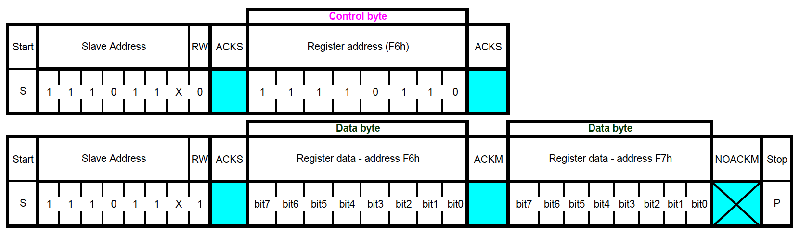
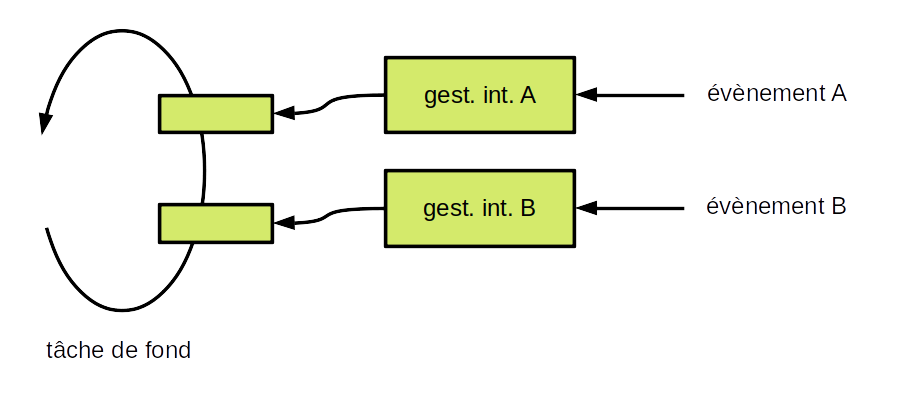
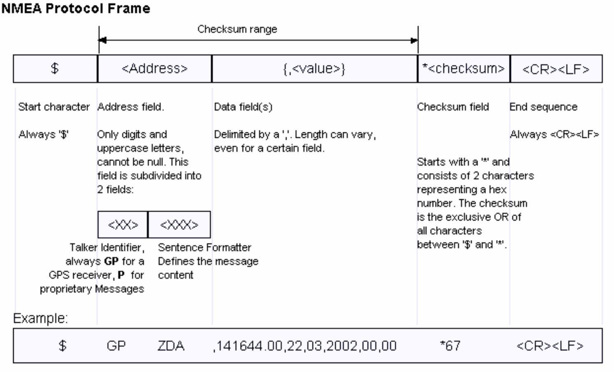

Equipement connecté
Notre exemple

- gérer les capteurs : alarme, distance, position...
- gérer les moyens de communication
- gérer la sécurité
- gérer les aspects métier
- etc.
De façon générale :
- pouvoir s'interfacer avec des périphériques
- effectuer des traitements
⇒ un ordinateur !
Vocabulaire utilisé :
- objet connecté = le camion de notre exemple
- équipement connecté = l'élément électronique communiquant installé dans le camion
Evolution du matériel
1985 - l'ordinateur le plus puissant du monde

Cray-2
- 1,9 GFLOPS (giga floating-point operations per second)
- 38 millions US$ (coût ramené à 2020)
2020 - iPhone 11

- 155 GFLOPS
- 850 US$
En 35 ans :
- puissance multipliée par 70 (environ)
- coût divisé par 38000
Que nous réservent les années à venir ?!
Mémoire, puissance de traitement et applications
1969 - l'ordinateur qui a permis d'aller sur la Lune

- un dans le Module de Commande, un dans le Module Lunaire
- masse : environ 50 kg (MC)
- puissance électrique consommée : 100 W (10 W au repos)
- mémoire permanente : 36000 mots de 16 bits (≈ 72 ko)
- mémoire effaçable : 2000 mots de 16 bits (≈ 4 ko)
- horloge : 2 MHz
- système d'exploitation simple, avec gestion de priorité
Comparé aux configurations actuelles :
- très peu de mémoire
- très peu de puissance de traitement
et pourtant, cela a permis d'amener des humains sur la Lune
Un développeur logiciel embarqué fait beaucoup avec peu 🙂
Un microcontrôleur actuel équivalent :

- mémoire permanente : 128 Ko
- mémoire effaçable : 8 Ko
- horloge : jusqu'à 64 MHz
- consommation : 30 mW (microcontrôleur seul)
- consommation en sommeil : 0,1 μW
- prix : 1,96 €
Architecture d'un équipement connecté
Rappel : architecture d'un ordinateur


Rôles principaux de la mémoire virtuelle :
- fournir à chaque processus un espace mémoire personnel
- assurer l'isolation entre ces espaces personnels
- assurer l'isolation entre les processus et l'OS
- éventuellement, fournir plus de mémoire qu'il n'y en a physiquement
Microcontrôleur
- un ordinateur dans une puce :
- unité centrale
- mémoire morte (mémoire Flash)
- mémoire vive (RAM - Random Access Memory)
- périphériques et interfaces :
- E/S analogiques
- E/S numériques
- timers
- liaison(s) série
- bus série
- chien de garde
- etc.
Mémoire morte
- auparavant :
- ROM - Read-Only Memory
- PROM - Programmable Read-Only Memory
- EPROM - Erasable Programmable Read-Only Memory
- EEPROM - Electrically Erasable Programmable Read-Only Memory
- effaçable/écrivable par octet
- mémoire Flash: type d'EEPROM
- effaçable par bloc
- écrivable par octet
Mémoire microcontrôleur

Chargement / amorçage
- ordinateur : amorçage (bootstrap) - du code en mémoire morte lance du code sur disque qui lance le système d'exploitation
- carte microcontrôleur : chargement (bootloader) - optionnel - permet une mise à jour logicielle simple
Architecture d'un équipement connecté
- microcontrôleur
- quelques périphériques (par ex. : timers, chien de garde, etc.)
- interfaces (liaison(s) série, bus série, GPIO, etc.)
- communication (peut être dans le microcontrôleur)
- optionnellement :
- interfaces supplémentaires
- périphériques (capteurs, etc.)
- positionnement
- interface utilisateur
- gestion de l'alimentation (batterie)
- stockage de données
- non représentée : mémoire additionnelle éventuelle, externe au microcontrôleur
Caractéristiques importantes équipement/microcontrôleur ?
- dépendent de l'application !
- exemple :
- entrées/sorties tout-ou-rien (GPIO)
- liaisons séries
- bus séries (SPI, I2C...)
- convertisseurs A/N, N/A
- blocs analogiques
- temps de cycle instruction
- mémoire (quantité, type, extensible...)
- taille registres (8/16/32 bits)
- boîtier
- etc.
Caractéristiques importantes pour l'IoT
- communication intégrée (Wi-Fi, Bluetooth, LoRaWAN, cellulaire...)
- sécurité (élément sécurisé, chiffrement par le matériel...)
- modes sommeil
- bas coût
- éco-système
- etc.
Outils matériels
- cartes de développement
- programmeur, débogueur
- schémas en usage libre
Voir partie Développement logiciel
Outils logiciels
- chaîne de développement croisé (toolchain)
- environnement de développement intégré (IDE)
- logiciel en usage libre
Voir partie Développement logiciel
Support
- support payant
- communauté active (forums, exemples...)
Quelques grandes familles de microcontrôleurs utilisées dans l'IoT
- microcontrôleurs à cœurs Arm
- ESP8266/ESP32
- modules cellulaires
- PSoC
- RISC-V
- PIC
- AVR
- MIPS32
- etc.
Arm
- société britannique créée en 1990
- il n'existe pas de microcontrôleurs Arm 🙂
- Arm conçoit des blocs de propriété intellectuelle (IP blocks), vendus sous forme de licences
- parmi ces blocs : cœurs de processeurs à architecture RISC (Reduced Instruction Set Computer)
- pour l'IoT (faible consommation, bas coût) : famille Cortex-M - le 32 bits au prix du 8 bits
Processeurs avec cœur Arm vendus
- à fin 2020 : 180 milliards
- dont 6,7 milliards sur T4 2020
- dont 4,4 milliards de Cortex-M sur T4 2020
Parmi les licenciés Cortex-M :
- Cypress (maintenant Infineon)
- Infineon
- Microchip
- Nordic Semiconductor
- NXP Semiconductors
- Renesas
- STMicroelectronics
- Texas Instruments
- etc.
Famille des processeurs Arm


Jeux d'instructions

Blocs fournis

Exemple : STMicroelectronics - famille STM32
Zoom sur le STM32L073RZ


- prix : US$ 5.26 (à l'unité) - US$ 2.17 (par 10000)
Carte de développement

prix : US$ 13
Carte d'extension LoRa/LoRaWAN
prix : US$ 28.90
Zoom sur le STM32WL55


- prix : US$ 5.47 (à l'unité) - US$ 3.56 (par 10000)
Carte de développement

US$ 42
Exemple : famille Cypress PSoC 4200
Bloc microcontrôleur :
- cœur Cortex-M0
- horloge : jusqu'à 48 MHz
- mémoire : jusqu'à 256 Ko Flash, 32 Ko RAM
- USB, CAN
Blocs analogiques :
- jusqu'à 4 amplis op
- convertisseur A/N jusqu'à 1 méga-échantillons/s sur 12 bits
- jusqu'à 6 comparateurs
- jusqu'à 4 convertisseurs N/A
- mesure capacitive
Blocs numériques :
- jusqu'à 8 blocs numériques universels
- jusqu'à 8 timers/compteurs/modulateurs d'impulsion en durée (PWM)
- jusqu'à 4 blocs de communication série (UART, I2C, SPI)
- gestionnaire de LCD à segment
Carte de développement

prix : US$ 15.00
Exemple : Espressif - famille ESP
Série ESP8266 :
- un cœur - 180 MHz
- 50 Ko RAM
- Flash externe, ou interne (ESP8285)
- Wi-Fi 2,4 GHz
- interfaces : UART, GPIO, I2C, SPI, ADC, etc.
Série ESP32 :
- un ou deux cœurs - 80 à 240 MHz
- 520 Ko RAM
- Flash interne
- Wi-Fi 2,4 GHz - Bluetooth/Bluetooth LE
- interfaces : UART, GPIO, I2C, SPI, ADC, DAC, Ethernet, SD, etc.
Série ESP32-S3 :
- deux cœurs - jusqu'à 240 MHz
- 512 Ko RAM
- Flash externe
- Wi-Fi 2,4 GHz - Bluetooth/Bluetooth LE 5.0
- interfaces : UART, GPIO, I2C, SPI, ADC, DAC, SD, etc.
- instructions vectorielles => réseaux de neurones, traitement du signal
Série ESP32-C3 :
- un cœur RISC-V - jusqu'à 160 MHz
- 400 Ko RAM
- Flash externe, ou 4 Mo interne
- interfaces : UART, GPIO, I2C, SPI, ADC, etc.
- destiné à remplacer l'ESP8266
Prix (à l'unité - ajouter la Flash si nécessaire):
- ESP8285 : environ US$ 1,80
- ESP32 : environ US$ 3,00 + Flash
Cartes de développement

ESP32-C3-DevKitC-02 - environ US$ 9,00
ESP32-EYE - environ US$ 20,00
Exemple : mangOH boards
mangOH Yellow :
- module de communication cellulaire programmable
- conception : Sierra Wireless
- schémas sous usage libre
- 2G, 4G, LTE-M/NB-IoT
- GNSS
- Wi-Fi, Bluetooth 5.0
capteurs :
- accéléromètre
- gyroscope
- magnétomètre
- pression, humidité, température
- qualité de l'air
- lumière
divers :
- gestion de batterie
- connecteur pour carte d'extension
- etc.
environnement logiciel :
- linux
- très riche librairie
- intégration cloud très avancée (Octave)
Prix (à l'unité) : environ US$ 165
Périphériques
Capteurs
- pression
- température
- niveau de lumière
- champ magnétique
- flux gazeux
- inclinaison
- accélération
- contact
- etc.
Actionneurs
- relais
- moteur
- moteur pas-à-pas
- servomoteur
- etc.
Autres équipements
- imprimante
- afficheur
- connecteur OBD (On-Board Diagnostics)
- lecteur d'étiquette RFID
- etc. etc. etc.
Interfaçage
GPIO (General Purpose digital Input Output)

Souvent nécessaire d'ajouter :
- optocoupleur
- relais
- etc.
Dans notre exemple :
- bouton d'alarme (E)
- contact ouverture de porte (E)
- signalement d'une alarme en cours (LED) (S)
- etc.
Conversion analogique / numérique (CAN - ADC)

- passage d'une valeur continue à une valeur discrète
- résolution : nombre de valeurs discrètes, ou nombre de bits utilisés pour le codage
- fréquence d'échantillonnage : nombre de mesures par seconde
- il peut être nécessaire d'amplifier le signal
- amplificateurs opérationnels intégrés dans certains microcontrôleurs (PIC16F527, PSoC 4, etc.)
Dans notre exemple :
- mesure de distance
- etc.
Conversion numérique / analogique (CNA - DAC)

Dans notre exemple
- modulation sirène
- etc.
Liaison série
- au moins 3 fils : Transmit, Receive, Ground
- autres fils possibles : Request to send, Ready for sending, etc.
- définition des fils : V.24 (RS232 aux USA)
niveaux électriques :
- V.28 et RS232 : -15 V à -3 V et +3 V à +15 V
- 0 et 5 V
- 0 et 3,3 V
- distance (V.28 et RS232) : < 15 m
- débit maximum : 20 kb/s (selon V.28)
- sur distances courtes : 115 kb/s ou plus
Connecteurs V.28 et RS232 : D-subminiature DB9 ou DB25


Pour les ordinateurs actuels, adaptateurs série-USB

Transfert des données :
Important :
- chaque côté doit être configuré de la même façon (vitesse, parité, etc.)
Dans notre exemple :
- contrôle des émetteurs/récepteurs
- contrôle d'un récepteur de positionnement par satellite
- etc.
SPI (Serial Peripheral Interface)

- communication synchrone : horloge et données
- maître / esclave
- 4 fils :
- horloge
- données, du maître à l'esclave
- données, de l'esclave au maître
- sélection de l'esclave
- bidirectionnel simultané
- côté maître : un fil de sélection par esclave
- possibilité d'utiliser un décodeur, ou de chaîner les esclaves
- débit maximum : quelques Mb/s
- distance maximale : quelques dizaines de cm
Dans notre exemple :
- afficheur
- etc.
I2C (Inter-Integrated Circuit)

- communication synchrone : horloge et données
- multi-maîtres
- 2 fils :
- horloge
- données
- bidirectionnel alterné
- un maître peut savoir si un autre maître communique => arbitrage
Ecriture :
Lecture :
- débit maximum : quelques Mb/s
- distance maximale : quelques dizaines de cm
CAN (Controller Area Network)

- créé pour les véhicules
- multi-maître
- accès au bus : CSMA/CD+AMP (Carrier Sense Multiple Access / Collision Detection with Arbitration on Message Priority)
- débit maximum : 1 Mb/s
- distance maximale : quelques centaines de m (à bas débit)
Radio
Voir section Communications
Développement logiciel
Développement croisé

- sur ordinateur seul :
- édition du code source
- construction (compilation + édition de liens) croisée
- émulation + débogage
- sur ordinateur + carte microcontrôleur :
- programmation (de la carte)
- débogage
- chaque fabricant de microcontrôleur : environnement de développement complet
- souvent gratuit
- souvent basé sur des logiciels libres et gratuits (Eclipse, gcc, etc.)
Environnements d'exécution
Systèmes d'exploitation (Operating System - OS)
- principalement : Linux
- comme pour un ordinateur de bureau :
- gestionnaire de paquets (package manager)
- interface utilisateur graphique possible
Mémoire minimale nécessaire :
- RAM : quelques Mo ou quelques dizaines de Mo
- dépend bien sûr des applications
Habituellement :
- RAM : 512 Mo à 8 Go
- carte Flash : 1 Go à 8 Go
- normalement, Linux nécessite une MMU (Memory Management Unit) ⇒ mémoire virtuelle
- le noyau peut être configuré pour fonctionner sans MMU
- grâce au projet μClinux
- attention à la compatibilité des applications
- Yocto : création de distributions Linux
- balenaOS : conteneurs Docker
- LYNX MOSA.ic : hyperviseur
Ce type d'environnement est destiné à des cartes plus proches d'une carte-mère d'ordinateur que d'une carte microcontrôleur
Système d'Exploitation Temps Réel (RTOS)
- permet un temps de réponse déterministe
- utilise très peu de mémoire
- pas d'ajout d'application "à chaud", il faut tout reconstruire
Mémoire minimale nécessaire :
- RAM : quelques Ko
- Flash : quelques Ko
- dépend bien sûr de l'application

- FreeRTOS acheté par Amazon
- ThreadX acheté par Microsoft
- Google et Facebook supportent Zephyr
Services disponibles :
- fil d'exécution (thread) / tâche (task)
- synchronisation et communication :
- messages et files (queues)
- sémaphores
- groupe d'événements
- etc.
- compteur de temps (timer)
- allocation mémoire
- etc.
(services analogues à ceux d'un OS)
Différence (très importante !) par rapport à un OS : pas de mémoire virtuelle.
- une tâche peut planter une autre tâche
- une tâche peut planter l'application globale
Bare metal
- pas d'OS, pas de RTOS, directement le microcontrôleur
- il peut y avoir une couche d'abstraction :
- ⇒ compatibilité microcontrôleurs même famille
- Arm : CMSIS
- ST : HAL, LL
- etc.
Question : que fait le microcontrôleur lorsqu'il n'y a rien à faire ?
Réponse :
- il boucle
- il peut aussi se mettre en sommeil (voir plus loin)
Question : et quand il y a quelque chose à faire ?
Réponse : interruptions et tâche de fond (interrupts and background task)
Interruption
- arrêt du code en cours d'exécution
- sauvegarde d'une partie du contexte
- exécution d'un code dédié à l'interruption
- restauration de la partie du contexte sauvegardée
- reprise de l'exécution du code qui avait été interrompu
Vocabulaire
- code dédié à l'interruption : gestionnaire d'interruption
- en anglais : interrupt handler ou ISR (Interrupt Service Routine)
Question : qu'est-ce qui génère une interruption ?

Entrée :
- interruption sur front descendant (entrée passant de niveau haut à niveau bas)
- interruption sur front montant (l'inverse)
Timer :
- interruption sur atteinte d'une durée
- interruption avec fourniture d'une durée, sur changement d'état d'une entrée
- etc.

UART :
- interruption sur réception d'un octet
- interruption sur fin d'envoi d'un octet
- interruption sur erreur de parité
- interruption sur caractère attendu
- etc.
Conversion A/N :
- interruption sur prêt à convertir
- interruption sur fin de conversion
- etc.
etc.
Question : que se passe-t-il si une interruption se produit pendant qu'un gestionnaire d'interruption est actif ?
Réponse : cela dépend 🙂
- chaque interruption peut avoir un niveau de priorité (éventuellement configurable)
- une interruption de priorité supérieure interrompt un gestionnaire d'interruption de priorité inférieure
- une interruption de priorité inférieure ou égale n'interrompt pas le gestionnaire d'interruption ; elle est mémorisée pour être exécutée ensuite
Architecture habituelle d'une application
- des gestionnaires d'interruptions très courts
- chaque gestionnaire stocke dans une zone mémoire dédiée les informations de l'interruption :
- identité de l'interruption
- valeurs propres à l'interruption (pour l'UART : octet reçu - pour la conversion A/N : valeur lue - etc.)
- une boucle sans fin parcourt les zones mémoires dédiées et agit en conséquence
Question : pourquoi des gestionnaires d'interruptions courts ?
Réponse :
- une interruption de priorité plus basse sera mise en attente
- si plusieurs interruptions de priorité plus basses, certaines peuvent être perdues
Plus détaillé :

Dans beaucoup d'applications, il y a peu d'évènements.
Question : comment économiser de l'énergie ?
Réponse : dormir, entre deux évènements

Sortie du sommeil
- la mise en sommeil est importante pour les équipements autonomes
- plusieurs types de sommeils possibles
- la partie générant les événements doit rester active
Au niveau logiciel
Exemple : réception d'octets sur une liaison série
Variables globales
bool rec_byte_event = false;
uint8_t rec_byte;
Gestionnaire de l'interruption "octet reçu"
rec_byte = get_byte_from_uart();
rec_byte_event = true;
Tâche de fond
while (true) {
...
if (rec_byte_event) {
rec_byte_event = false;
// Process rec_byte.
...
}
...
}
Que se passe-t-il si la tâche de fond a parfois trop de choses à faire, et ne peut pas vérifier assez souvent si un octet a été reçu ?
Des octets peuvent être perdus.
Solution habituelle :
- la routine d'interruption stocke les octets reçus dans un tampon
- quand elle peut, la tâche de fond traite le contenu du tmapon
Attention : le tampon est modifié par la routine d'interruption (quand un octet est reçu), et par la tâche de fond (quand les octets sont extraits du tampon)
Un bon moyen de gérer cela : un tampon circulaire, avec accès atomiques (voir plus loin)
Modèles de conception (design patterns) utiles
Automate fini (ou automate à nombre d'états fini)
(finite state automaton (FSA) ou finite state machine (FSM))
- machine abstraite possédant un nombre fini d'états
- est dans un seul état à la fois
- change d'état (transition) sur un évènement
- une condition peut s'ajouter à un évènement
- effectue un traitement lors d'une transition
Une façon de représenter un automate fini :
Exemple d'automate : décodage messages GNSS NMEA 0183
Format d'un message :
Décodage :

Une implémentation :
currentState = WAIT_DOLLAR;
while (true) {
c = getCharacter();
switch (currentState) {
case WAIT_DOLLAR:
if (c == '$') {
currentState = WAIT_G;
break;
}
// Other character, stay in this state.
break;
case WAIT_G:
if (c = 'G') {
currentState = WAIT_P;
break;
}
// Other character, go back to initial state.
currentState = WAIT_DOLLAR;
break;
case WAIT_P:
if (c = 'P') {
msgLength = 0;
currentState = WAIT_CR;
break;
}
// Other character, go back to initial state.
currentState = WAIT_DOLLAR;
break;
case WAIT_CR:
if (c == CR) {
currentState = WAIT_LF;
break;
}
// Other character, store into message.
addToMessage(c);
msgLength++;
break;
case WAIT_LF:
if (c == LF) {
processMessage(msgLength);
currentState = WAIT_DOLLAR;
break;
}
// Other character, go back to initial state.
currentState = WAIT_DOLLAR;
break;
default:
signalError(UNKNOWN_STATE);
currentState = WAIT_DOLLAR;
}
}
Un exemple réel : gestion de la connexion à un AP Wi-Fi pour l'ESP32 :
Plusieurs transitions non représentées, pour simplification.
Tampon circulaire
(ring buffer ou circular buffer)
- tableau utilisé comme interface entre un producteur de données et un consommateur de données
- permet un découplage entre le producteur et le consommateur
- si production plus rapide que consommation : perte des données les plus anciennes ou perte des nouvelles données
Exemple typique d'utilisation : réception d'octets depuis une liaison série.
- un pointeur sur la prochaine donnée à extraire
- un pointeur sur la prochaine case disponible
- en bout de tableau : on reboucle à partir du début
- ⇒ tampon circulaire

Une implémentation :
#define BUFFER_LENGTH 64
#define BUFFER_EMPTY -1
uint16_t inIndex;
uint16_t outIndex;
uint16_t dataLength;
uint8_t ringBuffer[BUFFER_LENGTH];
void initBuffer(void) {
inIndex = 0;
outIndex = 0;
dataLength = 0;
}
void putData(uint8_t data) {
ringBuffer[inIndex] = data;
// Move inIndex forward.
inIndex++;
if (inIndex == BUFFER_LENGTH) {
inIndex = 0;
}
dataLength++;
if (dataLength == BUFFER_LENGTH + 1) {
// Overflow. Move outIndex forward.
outIndex++;
if (outIndex == BUFFER_LENGTH) {
outIndex = 0;
}
dataLength--;
}
}
int getData(void) {
if (dataLength == 0) {
return BUFFER_EMPTY;
}
uint8_t dataToReturn = ringBuffer[outIndex];
dataLength--;
// Move outIndex forward.
outIndex++;
if (outIndex == BUFFER_LENGTH) {
outIndex = 0;
}
return dataToReturn;
}
Attention : si le tampon circulaire est partagé entre un gestionnaire d'interruption et la tâche de fond, rendre atomiques les modifications du tampon.
Exemple d'utilisation : messages GNSS

Bien entendu, automates et tampons circulaires s'utilisent également avec un RTOS ou un OS.
TP : STM32

TP : ESP32

Notre exemple
- quel équipement choisir ?
- puissance de traitement
- mémoire
- interfaces
- périphériques
- logiciel ?
- OS / RTOS / bare metal
- mise à jour à distance
- tout le reste...
- nécessaire d'avoir des informations détaillées
- sur les périphériques à gérer
- sur les fonctions métier à mettre en place
- conserver une marge de manœuvre
- attention : réduire le coût de l'équipement et des périphériques peut coûter très cher (voir plus loin)
A retenir
- équipement embarqué : domaine complexe
- mélange électronique analogique, électronique numérique et informatique
- développement logiciel : très spécifique
- progression rapide du matériel
- longue durée de vie des systèmes
- progression lente du logiciel
- importance croissante du libre (matériel et logiciel)
- la communication ajoute de la complexité : voir la suite